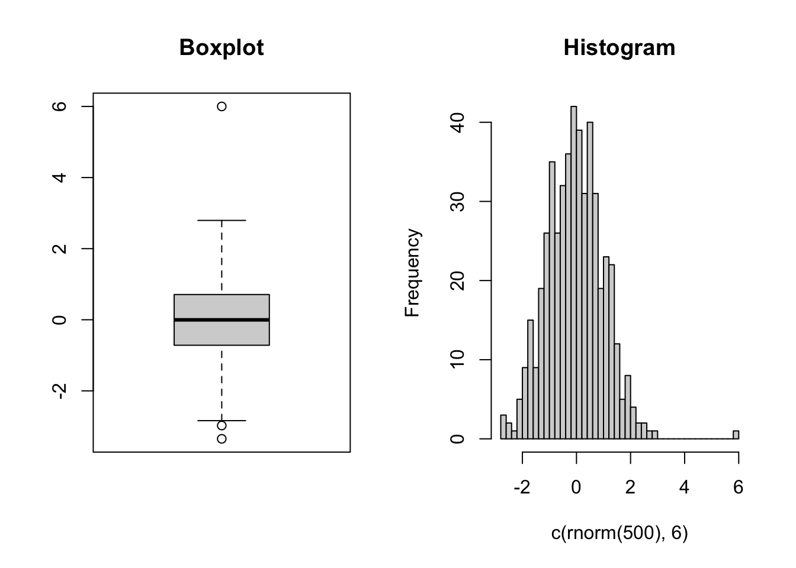
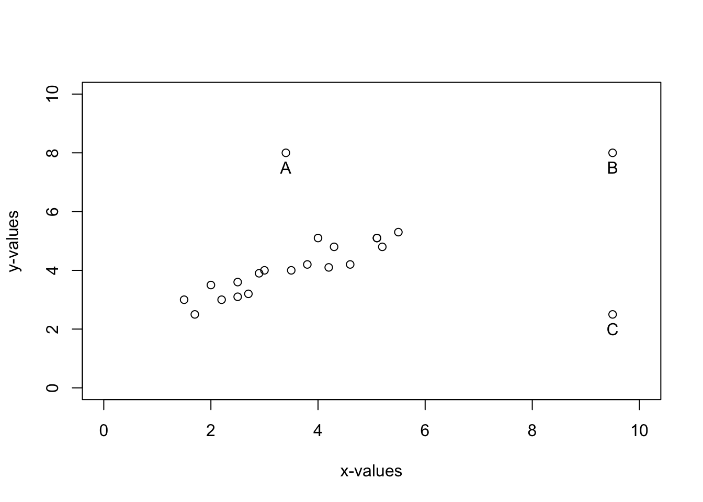
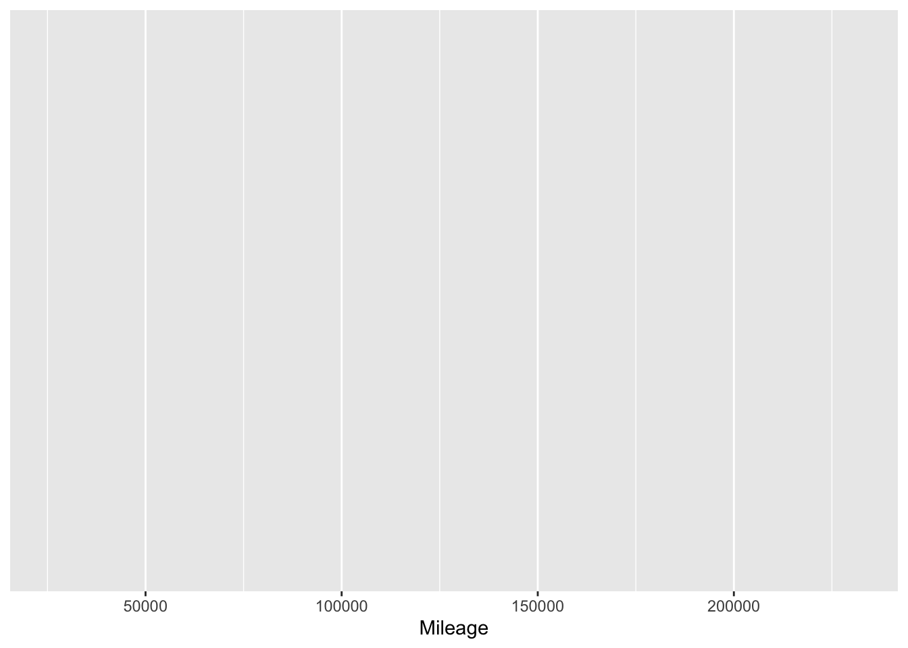

Lectures
LECTURE 1
Reading Datasets
Data = read.table("telecom.txt",
header = TRUE,
sep = ",")
Data## customerID MonthlyCharges TotalCharges PaymentMethod Churn
## 1 7590-VHVEG 29.85 109.9 Electronic check yes
## 2 5575-GNVDE 56.95 na Mailed check yes
## 3 3668-QPYBK NA 108.15 -- yes
## 4 7795-CFOCW 42.30 1840.75 Bank transfer no
## 5 9237-HQITU 70.70 <NA> Electronic check no
## 6 9305-CDSKC NaN 820.5 -- yes
## 7 1452-KIOVK 89.10 1949.4 Credit card no
## 8 6713-OKOMC NA N/A yes
## 9 7892-POOKP 104.80 3046.05 Electronic check no
## 10 8451-AJOMK 54.10 354.95 Electronic check noMissing Values
Scanning for Missing Values
is.na(Data$MonthlyCharges)## [1] FALSE FALSE TRUE FALSE FALSE TRUE FALSE TRUE FALSE FALSEwhich(is.na(Data$MonthlyCharges))## [1] 3 6 8Replace Alternative Indicators for Missing Values By NA
Data = read.table("telecom.txt",
header = TRUE,
sep = ",",
na.strings = c("na", "N/A", "NA"))
Data## customerID MonthlyCharges TotalCharges PaymentMethod Churn
## 1 7590-VHVEG 29.85 109.90 Electronic check yes
## 2 5575-GNVDE 56.95 NA Mailed check yes
## 3 3668-QPYBK NA 108.15 -- yes
## 4 7795-CFOCW 42.30 1840.75 Bank transfer no
## 5 9237-HQITU 70.70 NA Electronic check no
## 6 9305-CDSKC NaN 820.50 -- yes
## 7 1452-KIOVK 89.10 1949.40 Credit card no
## 8 6713-OKOMC NA NA yes
## 9 7892-POOKP 104.80 3046.05 Electronic check no
## 10 8451-AJOMK 54.10 354.95 Electronic check noHow to handle missing values
Method 1
Remove the missing values from the data. - Pro: The remaining data set is not transformed. - Con: If there are many missing values, the remaining data set has a significantly smaller size, which affects the reliability of future estimates.
We test the effect of removing missing values from the data set by creating a toy example with simulated data.
Create The Original Dataset
Data = rnorm(1000,
mean=100,
sd=25)
mean(Data)## [1] 98.90773Create A Data Set With 200 Missing Values
Data.missing = Data
Data.missing[sample(1000,200)]=NA
summary(Data.missing)## Min. 1st Qu. Median Mean 3rd Qu. Max. NA's
## 24.24 81.93 99.66 99.28 116.80 168.50 200create a new data set by removing the missing values
Data.Remove = Data.missing[- which(is.na(Data.missing))]
summary(Data.Remove)## Min. 1st Qu. Median Mean 3rd Qu. Max.
## 24.24 81.93 99.66 99.28 116.80 168.50Method 2
Drawback of method 2: The variance of the ‘cleaned’ data set is smaller than the original variance. Smaller variance for a variable = the variable is ‘more predictable’. The effect is more pronounced when there are many missing values.
Replace the missing values by the empirical mean
Data.Replace = replace(Data.missing,
which(is.na(Data.missing)),
mean(Data.missing[- which(is.na(Data.missing))]))Compare the standard deviations
sd(Data)## [1] 25.52277sd(Data.Replace)## [1] 22.85012Method 3
The standard deviation of X is not affected a lot. However: We changed values in the X variable, indepedently from the Y variable. ### Create a data set with 2 variables: X and Y.
set.seed(100)
x = rnorm(1000,
mean = 100,
sd = 25)
y = (5+rnorm(1000,0,0.2))*x + rnorm(1000,0,1)
Data = matrix(c(x,y),
1000,
2)The first variable (X) is containing missing values.
Data.missing = Data
Data.missing[sample(1000,200),1] = NAReplace missing values by a randomly generated number from the available X values.
Values.x = Data.missing[- which(is.na(Data.missing[,1])),1]
Data.Replace.x = replace(Data.missing[,1],
is.na(Data.missing[,1]),
sample(Values.x,200))
sd(Data.Replace.x)## [1] 25.56458sd(Data[,1])## [1] 25.7647Conclusions
Method 1 + 2 work will if the number of missing values is small, compared to the sample size. If there are many missing values, removing or replacing them can have significant impact on your results! Replacing values in one variables may cause inconsistencies with the remaining variables.
Outliers
Visualizing patterns in data
Draw a histogram in R and add the normal density
Data = rnorm(500)
hist(Data,
50,
freq=FALSE,
main= "Histogram and the standard normal density")
lines(seq(-4,4,0.1),
dnorm(seq(-4,4,0.1)),
col="blue", lwd=2)Extreme Points
Observations that do not follow the pattern of the majority of the data.
In data science, we are looking for (new and surprising) patterns in the data.
Extreme points can severely influence the patterns that can be found in the data.
The data pre-processing part has to
- identify the extreme points in the data set,
- determine a strategy on how to handle extreme points.
Finding extreme observations: Example 1
boxplot(Data)
hist(Data)The outlier could be detected by studying the histogram.
- A histogram shows one variable (e.g. x or y).
- A histogram can detect an observation that deviates in one direction. ### In two (or more) dimensions, a scatterplot can be used to reveal patterns between variables.
Basic Linear Regression
Outliers and high-leverage points
Extreme points
- Outlier: unusual observations in the y direction.
- High leverage point: unusual observation in the x direction. ### What should we do with outliers and high leverage points?
- Investigate the sensitivity of the model on the extreme observations;
- Decide to leave the outlier in the data set; 1. the observation actually happened; 2. and provides important information for the predictions;
- or remove the outlier from the data set: 1. the outlier is a wrong observation; 2. the outlier is not important for our particular study.
Creating a data set with outliers and leverage points:
x1=c(1.5, 1.7, 2, 2.2,2.5,2.5,2.7,2.9,3.0, 3.5,
3.8,4.2,4.3,4.6, 4, 5.1,5.1,5.2,5.5)
y1=c(3,2.5, 3.5, 3.0, 3.1, 3.6, 3.2, 3.9, 4, 4,
4.2, 4.1, 4.8, 4.2, 5.1, 5.1, 5.1, 4.8,5.3)
Ax=c(3.4)
Ay=c(8)
Bx=c(9.5)
By=c(8)
Cx=c(9.5)
Cy=(2.5)
plot(c(Ax,Bx,Cx), c(Ay,By,Cy),xlim=c(0,10),ylim=c(0,10), xlab="x-values", ylab="y-values")
text(c(Ax,Bx,Cx), c(Ay,By,Cy)-0.5, c("A","B","C"))
points(x1,y1)The data set
- 19 basis points;
- outlier: A;
- high leverage point C;
- outlier & high leverage point: B.
We apply linear regression model in 3 different situations:
- only the 19 basis points;
- the 19 basis points + the outlier A;
- the 19 + basis points + outlier/high leverage point B.
- the 19 basis points + the high leverage point C
Outliers.full.lm=lm(y~x)
summary(Outliers.full.lm)##
## Call:
## lm(formula = y ~ x)
##
## Residuals:
## Min 1Q Median 3Q Max
## -100.720 -13.164 -0.115 12.737 80.962
##
## Coefficients:
## Estimate Std. Error t value Pr(>|t|)
## (Intercept) 0.19707 2.63711 0.075 0.94
## x 4.99943 0.02544 196.536 <2e-16 ***
## ---
## Signif. codes: 0 '***' 0.001 '**' 0.01 '*' 0.05 '.' 0.1 ' ' 1
##
## Residual standard error: 20.72 on 998 degrees of freedom
## Multiple R-squared: 0.9748, Adjusted R-squared: 0.9748
## F-statistic: 3.863e+04 on 1 and 998 DF, p-value: < 2.2e-16Outliers.basis.lm=lm(y1~x1)
summary(Outliers.basis.lm)##
## Call:
## lm(formula = y1 ~ x1)
##
## Residuals:
## Min 1Q Median 3Q Max
## -0.50425 -0.29640 0.04634 0.21085 0.76203
##
## Coefficients:
## Estimate Std. Error t value Pr(>|t|)
## (Intercept) 1.8961 0.2321 8.168 2.75e-07 ***
## x1 0.6105 0.0627 9.737 2.29e-08 ***
## ---
## Signif. codes: 0 '***' 0.001 '**' 0.01 '*' 0.05 '.' 0.1 ' ' 1
##
## Residual standard error: 0.3383 on 17 degrees of freedom
## Multiple R-squared: 0.8479, Adjusted R-squared: 0.839
## F-statistic: 94.8 on 1 and 17 DF, p-value: 2.286e-08Outliers.A.lm=lm(c(y1,Ay)~c(x1,Ax))
summary(Outliers.A.lm)##
## Call:
## lm(formula = c(y1, Ay) ~ c(x1, Ax))
##
## Residuals:
## Min 1Q Median 3Q Max
## -0.6926 -0.4756 -0.1116 0.0353 3.8259
##
## Coefficients:
## Estimate Std. Error t value Pr(>|t|)
## (Intercept) 2.1385 0.6711 3.187 0.00511 **
## c(x1, Ax) 0.5987 0.1820 3.290 0.00407 **
## ---
## Signif. codes: 0 '***' 0.001 '**' 0.01 '*' 0.05 '.' 0.1 ' ' 1
##
## Residual standard error: 0.982 on 18 degrees of freedom
## Multiple R-squared: 0.3756, Adjusted R-squared: 0.3409
## F-statistic: 10.83 on 1 and 18 DF, p-value: 0.004067Outliers.B.lm=lm(c(y1,By)~c(x1,Bx))
summary(Outliers.B.lm)##
## Call:
## lm(formula = c(y1, By) ~ c(x1, Bx))
##
## Residuals:
## Min 1Q Median 3Q Max
## -0.54167 -0.30771 0.01182 0.23746 0.74105
##
## Coefficients:
## Estimate Std. Error t value Pr(>|t|)
## (Intercept) 1.80748 0.17465 10.35 5.25e-09 ***
## c(x1, Bx) 0.63787 0.04171 15.29 9.31e-12 ***
## ---
## Signif. codes: 0 '***' 0.001 '**' 0.01 '*' 0.05 '.' 0.1 ' ' 1
##
## Residual standard error: 0.3322 on 18 degrees of freedom
## Multiple R-squared: 0.9285, Adjusted R-squared: 0.9246
## F-statistic: 233.9 on 1 and 18 DF, p-value: 9.309e-12Outliers.C.lm=lm(c(y1,Cy)~c(x1,Cx))
summary(Outliers.C.lm)##
## Call:
## lm(formula = c(y1, Cy) ~ c(x1, Cx))
##
## Residuals:
## Min 1Q Median 3Q Max
## -2.26548 -0.60148 0.09143 0.68076 1.12001
##
## Coefficients:
## Estimate Std. Error t value Pr(>|t|)
## (Intercept) 3.4087 0.4590 7.427 6.94e-07 ***
## c(x1, Cx) 0.1428 0.1096 1.303 0.209
## ---
## Signif. codes: 0 '***' 0.001 '**' 0.01 '*' 0.05 '.' 0.1 ' ' 1
##
## Residual standard error: 0.8729 on 18 degrees of freedom
## Multiple R-squared: 0.0862, Adjusted R-squared: 0.03544
## F-statistic: 1.698 on 1 and 18 DF, p-value: 0.209plot(c(Ax,Bx,Cx), c(Ay,By,Cy),xlim=c(-2,10),ylim=c(-2,10), xlab="x-values", ylab="y-values")
text(c(Ax,Bx,Cx), c(Ay,By,Cy)-0.3, c("A","B","C"))
points(x1,y1)
abline(Outliers.basis.lm,col="red",lwd=2)
abline(Outliers.A.lm,col="blue",lwd=2)
abline(Outliers.B.lm,col="black",lwd=2)
abline(Outliers.C.lm,col="green",lwd=2)
legend("bottomright", c("19 basis points", " with A", "with B", "with C"), col=c("red", "blue", "black", "green"), lty=c(1,1,1,1))# Summarizing a Data Set ## Measures for the location of a data set: normal and lognormal distribution
par(mfrow=c(1,2))
X.Normal=rnorm(1000)
hist(X.Normal,30, main="Normal distribution", xlab="x")
abline(v=quantile(X.Normal,0.25), col="red", lwd=2)
abline(v=quantile(X.Normal,0.75), col="red", lwd=2)
abline(v=mean(X.Normal), col="blue", lwd=2)
X.LogNormal=exp(rnorm(1000))
hist(X.LogNormal,30, main="Lognormal distribution", xlab="x")
abline(v=quantile(X.LogNormal,0.25), col="red", lwd=2)
abline(v=quantile(X.LogNormal,0.75), col="red", lwd=2)
abline(v=mean(X.LogNormal), col="blue", lwd=2)
Measures for the center and spread of a data set: Example car data set
Load the Data
dtData = readRDS('dtData1.rds')
head(dtData)## Age Gender Region Mileage Expo Color Speed Urban Claims
## 1 60 F 2 66932 1 blue 0.0665 0.2167 0
## 2 29 F 2 73835 1 white 0.0610 0.5520 0
## 3 50 M 1 82826 1 gray 0.1152 0.0292 0
## 4 87 M 2 99446 1 white 0.1947 0.6425 1
## 5 68 M 2 123225 1 gray 0.2049 0.5588 0
## 6 51 F 1 205425 1 black 0.0315 0.0565 0summary(dtData)## Age Gender Region Mileage Expo
## Min. :20.0 F:1580 Min. :1.000 Min. : 25704 Min. :1
## 1st Qu.:34.0 M:2479 1st Qu.:2.000 1st Qu.: 69734 1st Qu.:1
## Median :44.0 Median :2.000 Median : 92389 Median :1
## Mean :46.5 Mean :1.949 Mean : 98477 Mean :1
## 3rd Qu.:57.0 3rd Qu.:2.000 3rd Qu.:122412 3rd Qu.:1
## Max. :90.0 Max. :3.000 Max. :231584 Max. :1
## Color Speed Urban Claims
## black:899 Min. :0.00090 Min. :0.0002 Min. :0.0000
## blue :929 1st Qu.:0.07795 1st Qu.:0.2673 1st Qu.:0.0000
## gray :962 Median :0.11890 Median :0.4815 Median :0.0000
## red :663 Mean :0.12168 Mean :0.4861 Mean :0.1619
## white:606 3rd Qu.:0.16190 3rd Qu.:0.7096 3rd Qu.:0.0000
## Max. :0.29980 Max. :0.9979 Max. :3.0000- Each line corresponds with a policyholder in a car insurance portfolio.
- The last column Claims contains the number of claims of a policyholder.
- Expo is the exposure, which is the time interval in which we measure the number of claims. ### This data set can be used to understand the characteristics of a policyholder that may influence the number of claims.
The summary provides an overview about the center and the spread of the variables in the data set.
- For variables such as Region and Color, the summary is not meaningful since these are qualitative variables.
- The variable Claims is a quantitative variable, but the summary is not useful because the data is discrete.
library(ggplot2)
P = ggplot(data = dtData, mapping = (aes(x = Mileage)))
P- We created the Base layer for the plot.
- We have to add layers to this base layer where each layer adds something to the plot.
P+geom_histogram(bins=20, color="black",fill="grey")
P+geom_histogram(bins=20, color="black",fill="grey")+
geom_vline(aes(xintercept=mean(Mileage)),
color="blue", linetype="dashed", size=1) +
geom_vline(aes(xintercept=quantile(Mileage, 0.25)),
color="red", linetype="dashed", size=1) +
geom_vline(aes(xintercept=quantile(Mileage, 0.75)),
color="red", linetype="dashed", size=1) +
ggtitle("Histogram of the variable Mileage")Data Transformation
Rescaling and normalization: Illustration with clusters
Example: Clusters with non-normalized data
X1=c(rnorm(50,50,100), rnorm(50,200,100))
X2=c(rnorm(50,0.1,0.1), rnorm(50, 0.8,0.1))
par(mfrow=c(1,2))
plot(X1,X2, pch=20,lwd=5,col="blue", main="Data set (non-standardized)")
Data=matrix(c(X1,X2),ncol = 2, byrow = FALSE)
fit <- kmeans(Data, 2)
fit## K-means clustering with 2 clusters of sizes 54, 46
##
## Cluster means:
## [,1] [,2]
## 1 236.41091 0.6513657
## 2 21.88267 0.2594290
##
## Clustering vector:
## [1] 1 2 2 2 2 1 2 1 2 2 2 2 2 2 2 2 2 2 2 2 2 2 2 1 2 1 1 1 2 2 2 2 1 2 2 2 1
## [38] 2 2 2 2 2 2 1 2 2 1 1 1 2 1 2 1 2 1 1 2 2 2 1 1 1 1 1 1 1 1 2 1 1 1 1 1 1
## [75] 1 1 1 1 1 1 1 2 1 1 1 1 1 2 1 1 1 1 1 1 1 1 2 1 1 1
##
## Within cluster sum of squares by cluster:
## [1] 268967.2 198702.5
## (between_SS / total_SS = 71.0 %)
##
## Available components:
##
## [1] "cluster" "centers" "totss" "withinss" "tot.withinss"
## [6] "betweenss" "size" "iter" "ifault"plot(X1,X2,col=(1+fit$cluster), pch=20,lwd=5, main = "Results after cluster analysis")
standardize with Z scores
X1.Z=(X1-mean(X1))/sd(X1)
X2.Z=(X2-mean(X2))/sd(X2)
plot(X1.Z, X2.Z, pch=20,lwd=5,col="blue", main="Data set (standardized)")Data=matrix(c(X1.Z,X2.Z),ncol = 2, byrow = FALSE)
fit <- kmeans(Data, 2)
fit## K-means clustering with 2 clusters of sizes 54, 46
##
## Cluster means:
## [,1] [,2]
## 1 -0.6789581 -0.7741923
## 2 0.7970378 0.9088344
##
## Clustering vector:
## [1] 1 1 1 1 1 1 1 1 1 1 1 1 1 1 1 1 1 1 1 1 1 1 1 1 1 1 1 1 1 1 1 1 1 1 1 1 1
## [38] 1 1 1 1 1 1 2 1 1 2 1 1 1 2 2 2 2 2 2 1 1 1 2 2 2 2 2 2 2 2 2 2 2 2 2 2 2
## [75] 2 2 2 2 2 2 2 1 2 2 2 2 2 1 2 2 2 2 2 2 2 2 1 2 2 2
##
## Within cluster sum of squares by cluster:
## [1] 44.55693 28.96629
## (between_SS / total_SS = 62.9 %)
##
## Available components:
##
## [1] "cluster" "centers" "totss" "withinss" "tot.withinss"
## [6] "betweenss" "size" "iter" "ifault"plot(X1.Z,X2.Z,col=(1+fit$cluster), pch=20,lwd=5,main = "Results after cluster analysis")